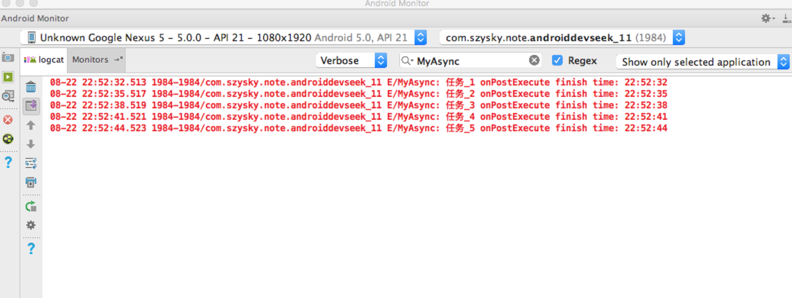
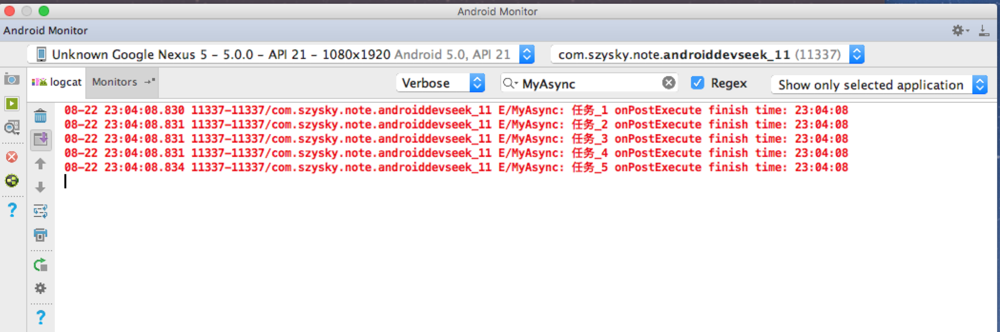
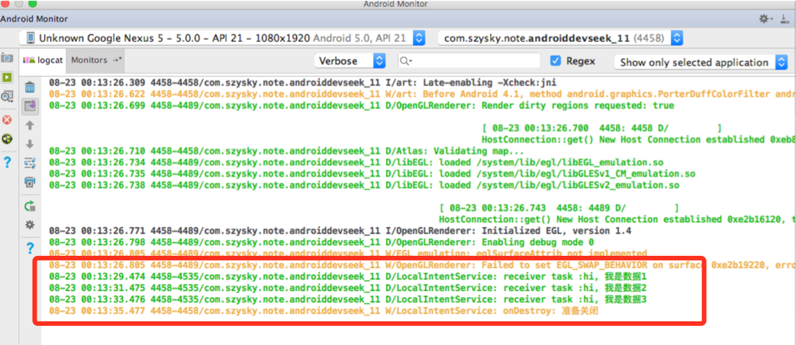

第11章: 不仅仅是在Android中, 就算java中线程都是一块很重要的知识, 占有不小的比重.
除了最常使用的Thread之外, 在Android之中可以扮演线程角色的还有很多: 如AsyncTask和IntentService, 同时HandlerThread也是一种特殊的线程. 虽然这些线程的表现形式有别于基础线程. 但是本质上还是传统的线程. 例如AsyncTask它的底层使用了线程池. 而对于IntentService和HandlerThread来说, 他们的底层则直接使用了线程.
根据不同的特性来实现不同的场景
AsyncTask: 封装了线程池和Handler, 它主要是为了方便开发者在子线程中更新UI.HandlerThread: 是一种具有消息循环的线程, 在它的内部可以使用Handler.IntentService: 是一个服务, 系统对其进行了封装使其可以更方便地执行后台任务, IntentService内部采用了HandlerThread来执行任务, 当任务执行完毕后IntentService会自动退出. 从执行任务的角度来看, 更像一个后台的线程. 但是因为其本身是一种服务, 所以导致不容易被系统杀死从而保证任务的执行. 而如果是一个后台线程, 由于这个时候进行中没有活动的四大组件, 那么这个进程的优先级会很低, 很容易被系统杀死, 这就是IntentService的优点.
线程的简单概述
在操作系统中, 线程是操作系统调度的最小单元, 同时线程又是一种受限的系统资源, 即线程不可能无限制的产生, 并且线程的创建和销毁都会有相应的开销. 当系统中存在大量的线程时, 系统会通过时间片转轮的方式调度每个线程, 因此线程不可能做到绝对的并行, 除非线程数量小于等于cpu的核心数. 但这种情况太少了, 所以线程池的概念就由此出现. 通过线程池就可以避免因为频繁创建和销毁线程所带来的系统开销.
主线程和子线程
主线程是指进程所拥有的线程, 在Java中默认情况下一个进程只有一个线程, 这个线程就是主线程. 主线程主要处理界面交互相关的逻辑, 因为用户随时会和界面发生交互, 因此主线程在任何时候都必须有较高的响应速度, 否则就会产生一种界面卡顿的感觉. 为了保持较高的响应速度, 这就要求主线程中不能执行耗时的任务, 这个时候子线程就派上用场. 子线程也叫作工作线程, 除了主线程以外的线程都叫做子线程
Android沿用了Java的线程模型, 其中的线程也分为主线程和子线程, 其中主线程也叫UI线程. 主线程的作用是运行四大组件以及处理它们和用户的交互. 而子线程的作用则是执行耗时任务, 比如网络请求, I/O操作等. 从Android 3.0 开始系统要求网络访问必须在子线程中进行, 否则网络访问将会失败并抛出NetworkOnMainThreadException这个异常, 这样做是为了避免主线程由于耗时操作所阻塞从而出现ANR现象.
Android中的线程形态
AsyncTask
AsyncTask是一种轻量级的异步任务类, 他可以在线程池中执行后台任务, 然后把执行的进度和最终的结果传递给主线程并在主线程更新UI. 从实现上来说.AsyncTask封装了Thread和Handler, 通过AsyncTask可以更加方便地执行后台任务, 对于特别耗时的任务来说, 建议使用线程池.
public abstract class AsyncTask<Params, Progress, Result> { |
AsyncTask就是一个抽象的泛型类. 这三个泛型的意义.
- Params: 表示参数的类型
- Progress: 表示后台任务的执行进度的类型
- Result: 则表示后台任务的返回结果的类型
如果不需要传递具体的参数, 那么这三个泛型参数可以用Void来代替.
AsyncTask提供了4个核心方法, 含义如下
onPreExecute(): 在主线程执行, 在异步任务执行之前, 此方法会被调用, 一般可以用于做一些准备工作doInBackground(): 在线程池中执行, 此方法用于执行异步任务, 参数params表示异步任务的输入参数. 在此方法中可以通过publishProgress()方法来更新任务的进度,publishProgress()方法会调用onProgressUpdate()方法. 另外此方法需要返回计算结果给onPostExecute()onProgressUpdate(): 在主线程执行,在异步任务执行之后, 此方法会被调用, 其中result参数是后台任务的返回值, 即doInBackground()的返回值.onPostExecute(): 在主线程执行, 在异步任务执行之后, 此方法会被调用, 其中result参数是后台任务的返回值, 即doInBackground的返回值.
除了上述的四种方法,还有onCancelled(), 它同样在主线程执行, 当异步任务被取消时, onCancelled()方法会被调用, 这个时候onPostExecute()则不会被调用.
AsyncTask在使用过程中有一些条件限制
AsyncTask的类必须在主线程被加载, 这就意味着第一次访问AsyncTask必须发生在主线程, 这个问题不是绝对, 因为在Android 4.1及以上的版本已经被系统自动完成. 在Android 5.0的源码中, 可以看到ActivityThread#main()会调用AsyncTask#init()方法.AsyncTask的对象必须在主线程中创建.execute方法必须在UI线程调用.- 不要在程序中直接调用
onPreExecute(),onPostExecute(),doInBackground和onProgressUpdate() - 一个
AsyncTask对象只能执行一次, 即只能调用一次execute()方法, 否则会报运行时异常. - 在Android 1.6之前,
AsyncTask是串行执行任务的; Android 1.6的时候AsyncTask开始采用线程池里处理并行任务; 但是Android 3.0开始, 为了避免AsyncTask带来的并发错误,AsyncTask又采用了一个线程来串行的执行任务. 尽管如此在3.0以后, 仍然可以通过AsyncTask#executeOnExecutor()方法来并行执行任务.
AsyncTask的工作原理
这里以源码5.0来分析, 不同的版本源码具体实现是不同的.
为了分析AsyncTask的工作原理, 可以从它的execute()方法开始分析, execute()方法又会调用executeOnExecutor()方法. 实际上这里调用进来后是一个串行的线程池, 一个进程中所有的AsyncTask全都在这个串行的线程池中排队执行, 然后会先调用AsyncTask#onPreExecute()方法, 然后线程池开始执行. 看看SerialExecutor()的源码实现:
public static final Executor SERIAL_EXECUTOR = new SerialExecutor(); |
在SerialExecutor的实现可以分析AsyncTask的排队执行的过程. 首先系统会把AsyncTask#Params参数封装成FutureTask对象, FutureTask是一个并发类, 在这里充当了Runnable的作用. 接着这个FutureTask会交给SerialExecutor#execute()方法去处理. 这个方法首先会把FutureTask对象插入到任务队列mTasks中, 如果这个时候没有正在活动AsyncTask任务, 那么就会调用SerialExecutor#scheduleNext()方法来执行下一个AsyncTask任务. 同时当一个AsyncTask任务执行完后, AsyncTask会继续执行其他任务直到所有的任务都执行完毕为止, 从这一点可以看出, 在默认情况下, AsyncTask是串行执行的
AsyncTask中有两个线程池(SerialExecutor和THREAD_POOL_EXECUTOR)和一个Handler(InternalHandler), 其中线程池SerialExecutor用于任务的排列, 而线程池THREAD_POOL_EXECUTOR用于真正的执行任务, 而InternalHandler用于将执行环境从线程切换到主线程, 其本质仍然是线程的调用过程.
在AsyncTask的构造方法中有如下这段代码, 由于FutureTask#run()方法会调用mWorker.call()方法, 因此mWorker的call方法最终会在线程池中执行.
mWorker = new WorkerRunnable<Params, Result>() { |
在mWorker.call()方法中, 首先将mTaskInvoked设为了true. 表示当前任务已经被调用过了. 然后执行AsyncTask#doInBackground()方法, 接着将其返回值传递给postResult(), 这个方法的实现:
private Result postResult(Result result) { |
这里, postResult()会通过sHandler发送一个MESSAGE_POST_RESULT消息, 而sHandler的定义如下:
private static final InternalHandler sHandler = new InternalHandler(); |
可以看出sHandler是一个静态的Handler对象, 为了能够将执行环境切换到主线程, 这就要求sHandler这个对象必须在主线程中创建. 由于静态成员会在加载类的时候进行初始化, 因此这就变相要求AsyncTask的类必须在主线程中加载, 否则同一个进程中的AsyncTask都无法正常工作. sHandler收到了消息后会调用AsyncTask#finish()方法, 如下:
private void finish(Result result) { |
这个finish()方法很简单, 如果AsyncTask被取消了, 那么就调用onCancelled()方法, 否则就会调用onPostExecute()方法, 可以看到doInBackground的反馈结果会传递给onPostExecute()方法.
通过源码分析, 可以确定从3.0开始, 默认情况下AsyncTask就是串行的. 通过一段代码测试.
|
给按钮添加一个点击触发, 点击的时候会触发五个AsyncTask的创建和执行 , 看一下结果

在5.0机器上测试所有的任务是串行执行的. 总共耗费了10秒. 而在2.x的版本所有的结束时间却都是一样的.
如果使用executeOnExecutor()那么结果看一下:
/** |

ok, 按照你的需求可以选择使用哪种实现方式.
HandlerThread
HandlerThread继承了Thread, 它是一种可以使用Handler的Thread, 它的实现也很简单, 就是run方法中通过Looper.prepare()来创建消息队列, 并通过Looper.loop()来开启消息循环, 这样在实际的使用中就允许在HandlerThread中创建Handler, 看一下run()方法.
|
从HandlerThread的实现来看, 它和普通的Thread有显著的不同之处. 普通的Thread主要用于在run方法中执行一个耗时任务; 而HandlerThread在内部创建了消息队列, 外界需要通过Handler的消息方式来通知HandlerThread执行一个具体的任务. HandlerThread是一个很有用的类, 在Android中一个具体使用场景就是IntentService.
由于HandlerThread#run()是一个无线循环方法, 因此当明确不需要再使用HandlerThread时, 最好通过quit()或者quitSafely()方法来终止线程的执行.
IntentService
IntentService是一种特殊的Service, 它继承了Service并且它是一个抽象类, 因此需要创建子类才能使用. IntentService可以用于执行后台耗时任务, 当任务执行后会自动停止, 同时由于本质是服务的原因, 这导致了它的优先级比单纯的线程要高很多, 所以IntentService比较适合执行一些高优先级的后台任务.
IntentService封装了Handler和HandlerThread. 这是在onCreate()来实现的.
|
当第一次启动的时候, onCreate()就会被调用, 内部就会创建一个HandlerThread, 然后使用它的Looper来构造一个Handler对象mServiceHandler. 这样通过 mServiceHandler发送的消息最终都会在HandlerThread中执行, 从这个角度看IntentService也可以用于执行后台任务.
每次启动IntentService的时候, 它的onStartCommand()方法就会被调用一次, IntentService在onStartCommand()中处理每个后台任务的Intent. 看看源码是如何处理外界的Intent的.
首先onStartCommand()调用了onStart()
|
这个方法只是通过mServiceHandler发送了一个消息, 所以这个消息会在HandlerThread中被处理. 消息收到后, 会将Intent对象传递给onHandlerIntent()方法去处理. 注意这个Intent对象和外界startService()参数传递内容是一样的. 通过Intent的参数就可以区分具体的后台任务, 这样在onHandlerIntent()方法中就可以对不同的后台任务做处理了.
当onHandlerIntent()方法执行完毕后, IntentService会通过stopSelf()方法来停止服务. 这里使用的方法是有参数的, 不使用无参数的stopSelf()是因为无参函数会立刻停止服务, 可能会导致还有没执行完的任务失效.
有参的stopSelf(int startId)在尝试 停止服务之前会判断最近启动的服务次数是否和startId这个参数值相等, 如果相等就立刻停止服务, 否则反之. 这个策略可以从AMS#stopServiceToken()方法的实现中找到依据.
IntentService#onHandleIntent()方法是一个抽象方法, 他需要我们在子类中实现, 它的作用是从Intent参数中区分具体的任务并执行这些任务. 如果目前只存在一个后台任务, 那么onHandleIntent()方法执行完成后, stopSelf(int startId)会立即停止服务; 如果目前存在多个后台任务, 那么当onHandleIntent()方法执行完最后一个任务时, stopSelf(int startId)才会停止任务. 另外由于每次执行一个后台任务都必须启动一次IntentService, 而其内部则通过消息的方式向HandlerThread请求执行任务, Handler中的Looper是顺序处理消息的, 这就意味着IntentService也是顺序执行后台任务的, 当有多个后台任务同时存在时, 这些后台任务会按照外界发起的顺序排队执行.
用代码来演示一遍:
// 派生一个IntentService 的子类 |

可以看出, 三个后台任务是串行执行的, 他们的执行顺序就是发起请求的顺序. 当任务3完成了之后. LocalIntentService才真正的停止, 因为这是时候执行了onDestroy().
Android中的线程池
概括一下线程池的优点:
- 重用线程池中的线程, 避免因为线程的创建和销毁所带来的性能开销.
- 能有效控制线程的最大并大数, 避免大量的线程之间因互相抢占系统资源而导致的阻塞现象.
- 能够对线程进行简单的管理, 并提供定时执行以及指定间隔循环执行等能力.
Android中的线程池的概念来源于Java中的Executor, Executor是一个接口, 真正的线程池的实现为ThreadPoolExecutor. ThreadPoolExecutor提供了一系列参数来配制线程池, 通过不同的参数可以创建不同的线程池. 而从功能的特性来分的话可以分成四类. 下面说明.
ThreadPoolExecutor
ThreadPoolExecutor是线程池的真正实现, 它的构造方法提供了一系列参数来配置线程池, 下面对构造方法中参数进行一下说明, 这些参数将会直接影响到线程池的功能特性.
public ThreadPoolExecutor(int corePoolSize, |
corePoolSize: 线程池的核心线程数, 默认情况下, 核心线程会在线程池中一直存活, 即使都处于闲置状态. 如果将ThreadPoolExecutor#allowCoreThreadTimeOut属性设置为true, 那么闲置的核心线程在等待新任务到来时会有超时的策略, 这个时间间隔由keepAliveTime属性来决定. 当等待时间超过了keepAliveTime设定的值那么核心线程将会终止.maximumPoolSize: 线程池所能容纳的最大线程数, 当活动线程数达到这个数值之后, 后续的任务将会被阻塞.keepAliveTime: 非核心线程闲置的超时时长, 超过这个时长, 非核心线程就会被回收.allowCoreThreadTimeOut这个属性为true的时候, 这个属性同样会作用于核心线程.unit: 用于指定keepAliveTime参数的时间单位, 这是一个枚举, 常用的有TimeUtil.MILLISECONDS(毫秒),TimeUtil.SECONDS(秒)以及TimeUtil.MINUTES(分)workQueue: 线程池中的任务队列, 通过线程池的execute方法提交的Runnable对象会存储在这个参数中.threadFactory: 线程工厂, 为线程池提供创建新线程的功能.ThreadFactory是一个接口.
线程池执行任务时大致遵循如下规则:
- 如果线程池中的线程数量未达到核心线程的数量, 那么会直接启动一个核心线程来执行任务.
- 如果线程池中的线程数量已经达到或者超过核心线程的数量, 那么任务会被插入到任务队列中排队等待执行.
- 如果在步骤2中无法将任务插入到任务队列中, 这通常是因为任务队列已满, 这个时候如果线程数量未达到线程池的规定的最大值, 那么会立刻启动一个非核心线程来执行任务.
- 如果步骤3中的线程数量已经达到最大值的时候, 那么会拒绝执行此任务,
ThreadPoolExecutor会调用RejectedExecution方法来通知调用者.
ThreadPoolExecutor的参数配置在AsyncTask中有明显的体现, 下面是其配置情况
private static final int CPU_COUNT = Runtime.getRuntime().availableProcessors(); |
这个配置后的规格是这样的
- 核心线程数等于CPU核心数 + 1;
- 线程池的最大线程数为CPU核心数的2倍 + 1;
- 核心线程无超时机制, 非核心线程在闲置时有超时机制,超时时间为1秒.
- 任务队列的容量为128
线程池的分类
1. FixedThreadPool
通过Executors#newFixedThreadPool()方法来创建. 它是一种线程数量固定的线程池, 当线程处于空闲状态时, 它们并不会被回收, 除非线程池关闭了. 当所有的线程都处于活动状态时, 新任务都会处于等待状态, 直到有线程空闲出来. 由于FixedThreadPool只有核心线程并且这些核心线程不会被回收, 这意味着它能够更加快速地响应外界的请求.
2. CachedThreadPool
通过Executors#newCachedThreadPool()方法来创建. 它是一种线程数量不定的线程池, 它只有非核心线程, 并且其最大值线程数为Integer.MAX_VALUE. 这就可以认为这个最大线程数为任意大了. 当线程池中的线程都处于活动的时候, 线程池会创建新的线程来处理新任务, 否则就会利用空闲的线程来处理新任务. 线程池中的空闲线程都有超时机制, 这个超时时长为60S, 超过这个时间那么空闲线程就会被回收.
和FixedThreadPool不同的是, CachedThreadPool的任务队列其实相当于一个空集合, 这将导致任何任务都会立即被执行, 因为在这种场景下SynchronousQueue是无法插入任务的. SynchronousQueue是一个非常特殊的队列, 在很多情况下可以把它简单理解为一个无法存储元素的队列. 在实际使用中很少使用.这类线程比较适合执行大量的耗时较少的任务
3. ScheduledThreadPool
通过Executors#newScheduledThreadPool()方法来创建. 它的核心线程数量是固定的, 而非核心线程数是没有限制的, 并且当非核心线程闲置时会立刻被回收掉. 这类线程池用于执行定时任务和具有固定周期的重复任务
4. SingleThreadExecutor
通过Executors#newSingleThreadPool()方法来创建. 这类线程池内部只有一个核心线程, 它确保所有的任务都在同一个线程中按顺序执行. 这类线程池意义在于统一所有的外界任务到一个线程中, 这使得在这些任务之间不需要处理线程同步的问题
第12章: Bitmap的加载和Cache